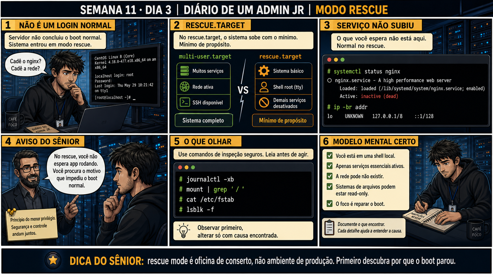

Semana 11 · Dia 3 | Nível Júnior
Modo Rescue
rescue mode é oficina de conserto, não ambiente de produção — primeiro descubra por que o boot parou
ANTES DE ALTERAR, OBSERVE. DEPOIS DE ALTERAR, VALIDE.
1. O chamado
#7442
PRIORIDADE ALTA
07:20
aberto por: monitoramento
host: srv-app-06 · serviço: boot — modo rescue inesperado
"Servidor caiu em modo rescue sozinho depois de um reboot agendado. Nginx não sobe."
systemctl status nginx mostra inactive e a rede só tem loopback. Isso já é o problema, ou é normal aqui?
💡 Passa o mouse nas palavras destacadas pra ver uma dica rápida — clica se quiser a explicação completa com analogia.
2. O sênior te conta
Semana passada, outro ticket
Um servidor caiu em rescue mode depois de uma atualização de pacotes noturna, e o técnico de plantão,
vendo o prompt de root, o systemctl mostrando tudo inativo e a rede ausente, escreveu no chat de incidente
"servidor comprometido, TODOS os serviços caíram, rede fora do ar" — e escalou como incidente crítico às
3 da manhã. Um sênior chamado depois olhou por 30 segundos e respondeu: "isso é o rescue.target fazendo
exatamente o que ele deveria fazer — não é um sintoma, é o estado normal desse modo". O verdadeiro
problema (uma linha do fstab apontando pra um UUID que mudou na atualização) levou 5 minutos pra achar
depois disso, porque ninguém mais estava perdendo tempo interpretando "nginx inativo" como se fosse parte
do incidente. A correção não foi técnica — foi de leitura: separar o que o modo rescue sempre mostra do
que é evidência real da causa. O ponto que fica: pânico lê sintoma esperado como se fosse a causa; calma
lê o mapa antes de gritar incêndio.
3. Decodificador de conceitos
Clica em qualquer termo pra ver a definição completa e uma analogia do dia a dia:
4. Ferramentas e leitura da evidência
| Comando | O que observar e por que importa |
|---|---|
journalctl -xb | Logs do boot atual com contexto extra — mostra onde e por que o systemd não avançou. |
mount | grep '/' | Mostra o que está montado e como — revela sistemas de arquivo ausentes ou em modo ro. |
cat /etc/fstab | Compara o que DEVERIA estar montado com o que realmente está. |
lsblk -f | Lista discos e partições com seus sistemas de arquivo e UUIDs — para comparar com o fstab. |
CentOS Linux 8 (Core) Kernel 4.18.0-477.el8.x86_64 on an x86_64 localhost login: root [root@localhost ~]# # systemctl status nginx ○ nginx.service - A high performance web server Loaded: loaded (/lib/systemd/system/nginx.service; enabled) Active: inactive (dead) # ip -br addr lo UNKNOWN 127.0.0.1/8 ::1/128
5. Laboratório guiado — marca conforme for testando
Segurança: execute os testes apenas em VM descartável e confirme nomes de discos, hosts e arquivos antes de cada comando.
- Ação: force um boot em rescue.target (via edição temporária do GRUB, Dia 2) e observe systemctl status de um serviço qualquer.$ systemctl status nginx ○ nginx.service - A high performance web server Loaded: loaded (/lib/systemd/system/nginx.service; enabled) Active: inactive (dead)
🔍 Detalhar esse comando
- systemctl status
- Mostra o estado atual de uma unidade do systemd: se está carregada, ativa, e as últimas linhas de log relacionadas.
- nginx
- A unidade consultada — aqui, um serviço de aplicação comum, que não sobe no rescue.target.
- Active: inactive (dead)
- Resultado esperado dentro do rescue.target: o serviço está configurado (enabled) mas não foi iniciado, porque o target mínimo não inclui serviços de aplicação.
Resultado esperado: serviço aparece inactive (dead) — comportamento esperado, não um erro.Por quê: rescue.target sobe só o essencial — nenhum serviço de aplicação é iniciado ali, isso não é falha. - Ação: rode journalctl -xb e procure a última linha antes da entrada em modo rescue.$ journalctl -xb | tail -30 [...] Failed to mount /data. Dependency failed for Local File Systems. [...] You are in rescue mode.
🔍 Detalhar esse comando
- journalctl
- Lê os logs centralizados do systemd.
- -x
- Adiciona contexto extra às mensagens de erro, incluindo explicações e links de documentação quando disponíveis — ajuda a entender o que a mensagem crua significa.
- -b
- Restringe aos logs do boot atual.
- | tail -30
- Mostra só as últimas 30 linhas — geralmente onde aparecem as falhas mais recentes, perto do momento em que o boot travou ou terminou.
Resultado esperado: mensagem de falha (mount, dependência, timeout) identificada.Se o seu resultado foi diferente
nada relacionado a falha de montagem aparece nos logs → confira primeiro comcat /proc/cmdlinese não sobrou umsystemd.unit=rescue.targetdo teste de ontem (Dia 2) — nesse caso você caiu em rescue por escolha anterior, não por sintoma novo. - Ação: compare mount | grep '/', cat /etc/fstab e lsblk -f entre si.$ mount | grep ' / ' /dev/mapper/vg_root-lv_root on / type ext4 (rw,relatime) $ cat /etc/fstab | grep data UUID=a1b2c3d4-... /data ext4 defaults 0 2 $ lsblk -f NAME FSTYPE UUID sdb1 ext4 e5f6g7h8-...
🔍 Detalhar esses comandos
- mount | grep ' / '
- Lista tudo que está montado e filtra só a linha da raiz — confirma o dispositivo real e as opções (rw/ro) da montagem atual.
- cat /etc/fstab | grep data
- Mostra a linha do fstab que deveria montar /data — o UUID que o sistema ESPERA encontrar no boot.
- lsblk -f
- Lista os discos e partições com seus sistemas de arquivo e UUIDs reais — a fonte da verdade para comparar com o que o fstab espera.
Resultado esperado: diferença identificada entre o que o fstab espera e o que realmente existe.Cilada comum: confundir "vejo o disco no lsblk" com "o fstab está correto" — o disco pode existir com um UUID diferente do que o fstab espera, e é exatamente essa comparação que revela o problema.🧑🏫 Aqui entra o Mentor (em breve): se a comparação não revelar uma causa clara, este é o ponto onde o chat com o Sênior-IA vai ajudar a interpretar a saída. - Ação: sem aplicar nenhuma correção ainda, documente a causa encontrada em uma frase clara.Resultado esperado: causa raiz identificada e escrita, pronta para amanhã (initramfs) ou depois (fstab quebrado).
- Ação: saia do rescue com um reboot normal e confirme se o sistema volta ao multi-user.target sozinho.Resultado esperado: confirma se a causa raiz precisa mesmo de correção ou era só o parâmetro temporário do Dia 2.
6. Antes de ver as opções — tenta responder
🧠 Recall ativo: por que o nginx aparece inactive (dead) e a rede não existe, no modo rescue — isso
já é o problema?
Não. No
rescue.target,
só serviços essenciais sobem — diferente do
multi-user.target,
que é o normal de produção. nginx inativo e rede ausente são o COMPORTAMENTO ESPERADO do rescue — o
trabalho de hoje é achar por que o boot não chegou ao multi-user.target, não "consertar" o nginx.
7. Questão comentada — clica numa alternativa
Um servidor caiu em modo rescue sozinho, sem ninguém pedir. Qual é a primeira
ação correta?
💡 Analogia do Sênior para Fixar: O Modo Rescue (rescue.target) é a sala de primeiros socorros: monta os discos locais em modo leitura/escrita e inicia um terminal administrativo mínimo para reparos.
7.1 journalctl -xb mostra uma linha clara de "Failed to mount" antes do sistema cair no rescue
Você identificou o ponto de falha e o sistema de arquivos envolvido.
Qual é o próximo passo, seguindo a disciplina de investigação segura?
💡 Analogia do Sênior para Fixar: O Modo Emergency (emergency.target) é o gerador a diesel de emergência: monta a raiz em modo somente-leitura e fornece o mínimo necessário para consertar o disco.
7.2 "No rescue, eu tenho shell de root. Isso significa que posso fazer qualquer coisa com segurança?"
Um colega, animado com o acesso de root disponível no rescue, já quer testar comandos livremente.
Por que ter privilégio de root no rescue não é o mesmo que ter liberdade total?
💡 Analogia do Sênior para Fixar: Montar a raiz com 'mount -o remount,rw /' no modo de recuperação é destrancar o cadeado do armário: permite corrigir arquivos de configuração corrompidos no /etc.
8. Procedimento profissional
- No rescue inesperado, não trate serviços inativos e rede ausente como o problema em si.
- Rode journalctl -xb para achar a linha de falha real que impediu o multi-user.target.
- Use mount, cat /etc/fstab e lsblk -f para comparar esperado versus real.
- Só altere algo depois de confirmar a causa exata da falha.
- Documente cada comando de inspeção e o que ele revelou antes de qualquer correção.
Prevenção
Padronize um checklist de "primeiros 2 minutos em rescue inesperado" fixado no runbook de
plantão: 1) confirmar que serviços inativos e rede ausente são esperados nesse modo, 2) rodar journalctl
-xb antes de qualquer outra ação, 3) só escalar como incidente crítico depois de identificar a causa real.
Isso evita que o pânico do primeiro contato vire uma escalada desproporcional ao problema real.
9. Validação e encerramento
- Serviços inativos e rede ausente no rescue não foram tratados como o problema em si.
- journalctl -xb identificou a linha real de falha do boot.
- mount, fstab e lsblk foram comparados antes de qualquer alteração.
- A causa raiz foi documentada antes de aplicar qualquer correção.
Rollback e limites
Os comandos de hoje (journalctl, mount, cat, lsblk) são todos de leitura — não
existe rollback necessário. O cuidado real é resistir à tentação de "consertar" serviços que estão
corretamente inativos por causa do estado mínimo do rescue.
💡 Sobre repetição espaçada: "princípio do menor privilégio" conecta com a
Semana 4 (sudo pontual em vez de root permanente) — mesma disciplina de poder disponível não é convite pra
usar sem necessidade. O Anki vai conectar os dois.
10. Resposta final
Alternativa correta: A. Nesta aula, a primeira ação certa foi
journalctl -xb, pra descobrir por que o systemd não chegou ao multi-user.target. O ponto central do
caso é este: rescue mode é oficina de conserto, não ambiente de produção — primeiro descubra por que o boot
parou.
🔓 O que você desbloqueou hoje
Capacidade de investigar com calma dentro de um modo rescue inesperado, sem
confundir comportamento esperado com problema. Amanhã você mergulha um nível mais fundo — o que acontece
quando o boot nem chega ao rescue.target, e trava ainda no initramfs.